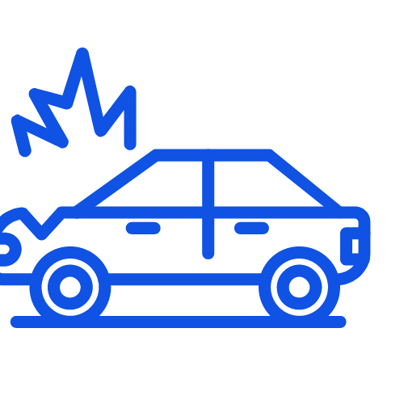

Pentru simplificarea cazului este important să efectuaţi fotografii la faţa locului şi să cunoaşteţi datele
despre:
{{ coveredItem }}
Pentru că dorim soluţionarea corectă şi rapidă a daunelor, respectiv plata cererilor temeinice, legale şi
dovedite, echipa tehnică AXERIA IARD utilizează în procesul de instrumentare daune, tehnologii informatice
inovatoare pentru:
{{ workflowItem }}
Va rugam sa efectuati demersurile necesare pentru limitarea măririi avariilor şi să luaţi pe cât posibil
măsuri de trasportare şi depozitare a vehiculului avariat în condiţii optime, pentru a evita degradarea,
avarierea, incendierea (prin pornirea motorului care prezintă scurgeri de combustibil) sau furtul anumitor
piese.
AXERIA IARD nu despagubeste avariile produse ulterior evenimentului, iar orice risc produs va fi despăgubit o
singură dată, indiferent dacă acest lucru se realizează în baza poliţei de asigurare RCA a vinovatului sau în
baza propriei poliţe RCA, în cazul achiziţionării serviciului auxiliar de gestionare a daunelor (decontare
directă).
Obtinerea din asigurare de foloase materiale necuvenite sau multiple, prin procurarea de înscrisuri, facturi
fiscale false sau nereale, declararea decalată a datei accidentului, declararea unor date inexacte, etc., dar
și prin inducerea în eroare a AXERIA IARD sub orice formă, se pedepseşte conform Codului Penal și va avea
drept consecință restituirea valorii încasate (dacă s-a realizat plata), iar persoana vinovată va raspunde din
punct de vedere penal conform legislației in vigoare, urmând a achita cheltuielile și daunele ocazionate de
respectivul litigiu.
DAUNE RCA -
EVENIMENT INTAMPLAT SI
SOLUTIONAT IN ROMÂNIA
....
In cazul protocolorii cazului pe baza Constatarii Amiabile de Accident, se recomanda prezenta la constatare
a ambilor conducatori si a ambelor autovehicule implicate in evenimentul rutier
La momentul evenimentului trebuie sa procedati pe cat posibil, astfel:
Eveniment soldat doar cu daune materiale, fara vatamari corporale.
Daca evenimentul s-a produs in Romania (indiferent de loc: drumuri publice/inchise circulatiei,
incinte, etc.),
au fost implicate 2 vehicule asigurate RCA si au rezultat doar daune materiale (la cele doua
vehicule),
fara vatamari corporale, soferii au posibilitatea/optiunea sa completeze de comun acord formularul de
Constatare Amiabila de Accident (fara interventia Organelor Abilitate sa cerceteze astfel de
evenimente),
astfel incat reprezentantii Axeria IARD sa stabileasca vinovatia conducatorilor auto implicati in
accident
si pagubele produse. Completarea acestui formular nu reprezinta o recunoastere a raspunderii unuia
dintre
conducatorii auto, ci un cumul de evenimente si fapte ce contribuie la solutionarea dosarelor de
dauna.
Conducatorii auto trebuie sa procedeze astfel:
sa scoata imediat vehiculele in afara partii carosabile, ori daca starea vehiculelor nu permite
acest lucru, sa le deplaseze cat mai aproape de bordura sau acostament, astfel incat circulatia sa
nu fie perturbata;
sa completeze si sa semneze formularul Constatarea Amiabila de Accident;
sa fotografieze sau sa fotocopieze documentele vinovatului si vehiculului vinovat;
sa efectueze fotografii la locul accidentului.
ATENTIE!!! In cazul protocolarii cazului pe baza Constatarii Amiabile de Accident,
se recomanda prezenta la constatare a ambilor conducatori si a ambelor autovehicule implicate in
evenimentul rutier.
Conform Codului Rutier, accidentul de circulatie protocolat de catre Politie, este evenimentul care
intruneste cumulativ urmatoarele conditii:
s-a produs pe un drum deschis circulatiei publice, ori si-a avut originea intr-un asemenea loc
(intrare, alee, strada, bulevard, splai, etc.) ca urmare a nerespectarii unei reguli de circulatie;
a avut ca urmare decesul, ranirea unuia sau a mai multor persoane ori avarierea a cel putin unui
vehicul sau alte pagube materiale;
in eveniment a fost implicat cel putin un vehicul in miscare.
EVENIMENT SOLDAT CU AVARII MATERIALE SI VATAMARI CORPORALE/DECES
Daca evenimentul s-a produs in Romania, a fost implicat cel putin 1 vehicul asigurat RCA la AXERIA si
in urma caruia au rezultat avarii si/sau moartea sau vatamarea integritatii corporale ori a sanatatii
unei persoane, conducatorul vehiculului vinovat este obligat sa procedeze astfel:
sa ia masuri de anuntare imediata la numarul unic 112 a autoritatilor (Politie / Salvare /
Pompieri);
sa nu modifice sau sa stearga urmele accidentului;
sa nu paraseasca locul evenimentului fara incuviintarea Politiei;
daca se impune, sa acorde primul ajutor persoanelor care au nevoie, fara a agrava starea de
sanatate a acestora.
Este interzis oricarei persoane sa schimbe pozitia vehiculului implicat intr-un accident de
circulatie,
sa modifice starea locului sau sa stearga urmele accidentului fara incuviintarea Politiei care
cerceteaza accidentul.
Documentele pe care trebuie sa le prezentati Politiei sunt:
permisul de conducere al soferului pagubit/vinovat;
certificatul de inmatriculare (talon) a vehiculului pagubit/vinovat;
actul de identitate al pagubitului/vinovatului (C.I./buletin);
polita de asigurare obligatorie RCA a vehiculului vinovat;
polita de asigurare obligatorie RCA a vehiculului pagubit.
EVENIMENT SOLDAT DOAR CU AVARII MATERIALE, NESOLUTIONAT AMIABIL
Daca evenimentul s-a produs in Romania, s-au produs avarii la mai mult de 2 vehicule si / sau altor
bunuri,
in afara vehiculului dvs.; sau s-au produs doar la 2 vehicule, au rezultat doar daune materiale, fara
vatamari corporale,
dar conducatorii nu se inteleg amiabil, conducatorul vehiculului pagubit trebuie sa procedeze astfel:
daca este posibil, sa fotografieze sau sa fotocopieze documentele vinovatului si vehiculului
vinovat;
daca este posibil, sa efectueze fotografii la locul accidentului;
sa se prezinte la Unitatea de Politie competenta, pe raza careia s-a produs accidentul, in termen
de cel mult 24 de ore de la producerea evenimentului, pentru declararea evenimentului si intocmirea
documentelor de constatare.
Documentele pe care trebuie sa le prezentati la Politie sunt:
permisul de conducere al soferului pagubit;
certificatul de inmatriculare (talon) a vehiculului pagubit;
actul de identitate al pagubitului (C.I./buletin);
polita de asigurare obligatorie RCA a vehiculului vinovat (daca este posibil);
polita de asigurare obligatorie RCA a vehiculului pagubit.
Documentele pe care le emite Politia sunt:
Proces-Verbal de Constatare a Contraventiei (daca se prezinta vinovatul);
Autorizatie de Reparatie.
Notificarea asiguratorului cu privire la producerea evenimentului asigurat poate fi facuta de catre
persoana prejudiciata, asigurat sau mandatarii acestora.
Notificarile daunelor se primesc si se inregistreaza astfel:
Notificarea daunei se poate face cu usurinta daca aveti la indemana documentele de mai
jos:
Polita de asigurare a vehiculului vinovat (daca este posibil);
Actul de identitate (C.I./buletin) a persoanei care face notificarea;
Certificatul de inmatriculare (talon)/cartea de identitate a vehiculului pagubit avariat;
Permisul de conducere al soferului pagubit;
Constatarea amiabila de accident sau documentele emise de autoritati (Politie / Pompieri / etc);
Datele proprietarului vehiculului pagubit;
Alte documente, in functie de evenimentul care a avut loc.
ATENTIE!!! In cazul in care avariile au survenit ca urmare a mai multor evenimente,
acestea trebuie notificate separat.
In maxim 24 h, reprezentantii AXERIA analizeaza datele notificate si aloca cazului dvs. un specialist
constatari daune (din zona dvs.), care va contacteaza telefonic si va ofera consiliere, stabilind
totodata, de comun acord, data, ora si locul in care va avea loc constatarea avariilor si colectarea
documentelor necesare instrumentarii dosarului de dauna.
NOTA: Procedura se aplica atat pentru vehiculele deplasabile prin forta proprie, cat si
pentru cele nedeplasabile.
In urma notificarii, reprezentantii AXERIA stabilesc de comun acord cu beneficiarul politei data, ora
si locul
constatarii avariilor, pentru instrumentarea dosarului de dauna.
Constatarea se poate efectua pentru vehiculele deplasabile, dar si pentru cele nedeplasabile.
In cadrul acestui proces sunt analizate avariile rezultate in urma evenimentului si sunt identificate
elementele necesare evaluarii dosarului de dauna.
La momentul efectuarii constatarii, pentru deschiderea dosarului de dauna, beneficiarul politei de
asigurare
trebuie sa prezinte urmatoarele documente:
1. Obligatorii
actul de identitate al pagubitului sau reprezentantului acestuia (C.I./buletin) - original;
permisul de conducere al soferului pagubit (daca vehiculul era condus la momentul evenimentului) -
original;
certificat de inmatriculare (talon) sau cartea de identitate a autovehiculului pagubit - original;
2. Specifice cazului
Se depun in acest stadiu, pentru operativitatea instrumentarii dosarului de dauna:
actul de identitate (C.I./Buletin) si permisul soferului vinovat (daca este posibil) - copie;
polita de asigurare obligatorie RCA al vehiculului vinovat (sau cel putin dovada existentei
acesteia) - copie;
Constatarea Amiabila de Accident sau Documentul emis de catre Autoritati (P.V. Politie / Pompieri,
Autorizatie de Reparatie, Anexa 2, etc.) - original;
imputernicirea de reprezentare (PJ)/procura notariala (PF), in cazul in care soferul care se
prezinta la constatare nu este proprietarul vehiculului avariat - original;
alte documente, in functie de evenimentul care a avut loc.
ATENTIE!!! In cazul protocolarii cazului pe baza Constatarii Amiabile de Accident, se recomanda
prezenta la constatare a ambilor conducatori si a ambelor autovehicule implicate in evenimentul
rutier.
3. Alte documente
Pe parcursul instrumentarii, in functie de continutul actelor prezentate, se pot solicita pagubitului
si alte documente,
pentru completarea dosarului de dauna:
documente care atesta dreptul de proprietate asupra vehiculului, in cazul in care acesta nu este
inmatriculat / inregistrat fiscal de catre noul proprietar;
fotografii ale autovehiculului avariat;
copii pasaport, etc.
AXERIA doreste solutionarea corecta si rapida a daunelor, respectiv plata cererilor temeinice, legale,
dovedite si respingerea celor nejustificate.
Orice tentativa de obtinere sau facilitare de despagubiri prin declaratii false sau utilizarea de
documente false se pedepseste conform Codului Penal din Romania, iar raspunderea apartine in
exclusivitate declarantului. Anularea dosarului de dauna si a politei de asigurare se face "sine die",
de catre asigurator.
Declararea asigurarii multiple (daca este cazul), este obligatorie, iar plata riscului produs se va
face proportional in acest caz.
Banii in 3 zile !!!... printr-o plata anticipata in baza unei evaluari intocmite rapid de catre
AXERIA, conform legislatiei in vigoare, folosind sistemele de evaluare specializate pentru evaluarea
costurilor de readucere a vehiculului la starea anterioara producerii evenimentului. Plata se poate
efectua in contul bancar personal sau in contul bancar al unei terte persoane, situatie in care
persoana pagubita completeaza cererea de plata a sumei in contul bancar al unei terte persoane, la
care ataseaza dovada contului bancar si actul de identitate al titularului contului bancar.
Avantaje:
Primirea despagubirii in termen scurt (maxim 3 zile lucratoare de la depunerea ultimului
document);
Constatarea rapida a avariilor;
Accesul rapid si facil la informatia privind stadiul instrumentarii / solutionarii dosarului de
dauna;
Simplificarea formalitatilor;
Pagubitul este liber sa-si repare autovehiculul unde si cum doreste;
Calculul este cel maximal avand in vedere preturile pieselor de la unitatile de specialitate.
Documentele necesare pentru efectuarea platii:
Actele solicitate, necesare instrumentarii dosarului de dauna;
Formularul de Acceptare a ofertei AXERIA.
Atentie!!! In cazul in care vehiculul este proprietatea unei firme de leasing sau a fost
achizitionat printr-un sistem de rate cu dobandirea dreptului de proprietate la finalul
contractului, viramentul aferent despagubirii se realizeaza in contul utilizatorului doar cu acordul
proprietarului, care a garantat finantarea achizitia.
In astfel de cazuri, proprietarul vehiculului va fi notificat de catre utilizator sau de catre
reprezentantii AXERIA, solicitandu-se un document de cesiune pentru incasarea despagubirii de catre
utilizator. Raspunsul cesionarului (proprietarului) va reprezenta titlu executoriu privind incasarea
despagubirii.
AXERIA garanteaza ca Reparatorul intruneste toate standardele de calitate;
Comunicare rapida Reparator - AXERIA - Beneficiarul politei de asigurare;
Constatarea/reconstatarea rapida a avariilor;
Accesul rapid si facil la informatie privind stadiul instrumentarii/solutionarii dosarului de
dauna;
Rapiditate in transmiterea centralizata a documentelor, fara implicarea directa a Beneficiarului
politei de asigurare;
Solutionare rapida a solicitarilor de reconstatare. Beneficiarul politei de asigurare nu are
obligatia sa participe la reconstatare si nici sa semneze Procesul Verbal Suplimentar intocmit cu
aceasta ocazie;
Achitarea contravalorii reparatiilor direct de asigurator in contul reparatorului;
Eliberarea autovehiculului din service pe baza Acceptului de Plata emis de asigurator;
Prioritate la achizitionarea pieselor de schimb si efectuarea reparatiilor, etc.
UNITATILE REPARATOARE agreate de catre AXERIA IARD →
Documentele necesare pentru efectuarea platii:
Actele solicitate, necesare instrumentarii dosarului de dauna;
Facturi Fiscale care atesta efectuarea reparatiei;
Deviz de reparatie;
Cerere de Despagubire.
In situatia unui vehicul sau unui bun avariat a carui valoare de reparatie depaseste valoarea de piata
a acestuia, cazul se trateaza ca Dauna Totala Economica.
Avantaje:
Plata rapida;
Posibilitatea de achizitie a unui autovehicul nou;
Siguranta pe care o prezinta un autovehicul nou.
Documentele necesare pentru efectuarea platii:
Actele solicitate, necesare instrumentarii dosarului de dauna;
Cerere de Despagubire.
Asiguratorul nu garanteaza ca Reparatorul intruneste standardele de calitate;
Comunicarea se realizeaza pe mail sau telefonic, respectand termenele legale pentru raspuns;
Transmiterea documentelor se realizeaza prin posta sau depunere directa la Sediul Central Axeria
IARD;
Solutionarile de reconstatare se transmit exclusiv pe adresa de mail reconstatare@axeria-iard.ro,
iar raspunsul se transmite in termenul indicat de lege, cu deplasarea obligatorie a unui
reprezentant Axeria IARD care sa verifice toate datele cuprinse in solicitare;
Reparatiile se achita in termenul indicat de lege;
Eliberarea autovehiculului din service se efectueaza fara Accept de Plata emis de asigurator, iar
dupa reparatie un reprezentant Axeria IARD verifica realitatea lucrarii, comparand cu documentatia
depusa pentru efectuarea despagubirii.
Documentele necesare pentru efectuarea platii:
Actele solicitate, necesare instrumentarii dosarului de dauna;
Facturi si Chitante Fiscale/OP care atesta efectuarea si achitarea reparatiei;
Deviz de reparatie;
Cerere de Despagubire.
ATENTIE!!! In cazul in care doriti cu ocazia reparatiilor efectuate pe dosarul de dauna ca anumite
piese sau subansamble sa fie montate la un nivel superior calitativ sau constructiv, nefiind
similare celor avariate, diferenta de cost va fi suportata de catre beneficiar.
NOTA: Reparatiile se pot efectua in orice unitate reparatoare auto, in conditiile legii, fara nicio
restrictie sau constrangere din partea asiguratorului RCA sau a unitatii reparatoare auto, care ar
putea sa influenteze optiunea partii prejudiciate.
Accident!?!

Evenimentul este acoperit de o asigurare RCA AXERIA IARD.
Echipa noastra tehnica este la dispozitia dvs. pentru solutionarea rapida a problemei!
DAUNE RCA - EVENIMENT INTAMPLAT SI SOLUTIONAT IN AFARA ROMÂNIEI
Procedura diferă în funcţie de ţara unde a avut loc accidentul.
Pentru evitarea complicaţiilor ulterioare, documentele pe care asiguratul Axeria IARD le semnează trebuie să
fie într-o limbă cunoscută de acesta sau traduse în limba română. Se prezumă că semnatarul documentelor
cunoaşte conţinutul şi eroarea de drept nu exonerează de răspundere.
Documentul Carte Verde reprezintă un document internaţional de asigurare emis în numele biroului naţional
auto, în baza căruia, proprietarul/utilizatorul/conducătorul vehiculului pentru care documentul a fost
eliberat, este asigurat în privinţa răspunderii civile pentru pagubele produse prin intermediul vehiculului
respectiv, în conformitate cu legislaţia fiecărui stat pentru care documentul de asigurare este valabil.
Dacă evenimentul este acoperit de o asigurare Carte Verde AXERIA (ataşată asigurării RCA) şi s-a produs în
afara teritoriului României, asiguratul trebuie să anunţe cât mai rapid reprezentanţii Axeria IARD, astfel:
TELEFONIC (Luni ÷ Vineri, 09:00-18:00) – apelând Serviciul Call-Center, un reprezentant
Customer Care vă oferă suportul necesar unei notificări complete şi corecte;
E-mail – trimiteţi un mesaj la adresa greencard@axeria-iard.ro, în care menţionaţi
detaliile evenimentului, daunele materiale şi/sau vătămările corporale produse şi cui aparţine vinovăţia,
iar dacă este cazul sau solicitaţi, un specialist daune vă contactează în vederea clarificării tuturor
aspectelor.
Completaţi cu atenţie toate rubricile formularului Constatare Amiabilă de Accident sau aşteptaţi să vină
Autorităţile Competente să întocmească documentele în care se consemnează datele privind împrejurările în care
a avut loc accidentul, dacă legislaţia ţării respective impune acest lucru.
Predaţi celuilalt şofer o copie după documentul dumneavoastră de asigurare Carte Verde, după certificatul de
înmatriculare (talon), permisul dvs. de conducere, actul de identitate, etc.
DAUNE RCA - DECONTARE DIRECTĂ
Dacă sunteţi implicat într-un eveniment rutier, aveţi calitatea de păgubit şi sunteţi beneficiarul serviciului
auxiliar de gestionare a daunelor de către asigurătorii RCA a propriilor asiguraţi şi se îndeplinesc
condiţiile cumulative:
{{ directSettlementItem }}
atunci puteţi să urmaţi procedura standard pentru soluţionarea unui dosar de daună, primind din partea noastră
tot sprijinul de care aveţi nevoie, nefiind nevoit să apelaţi la serviciile oferite de asigurătorul persoanei
vinovate.
La momentul efectuării constatării, pentru deschiderea dosarului de daună, asiguratul trebuie să prezinte
următoarele documente:
{{ directSettlementDocument }}
ATENŢIE!!! În cazul protocolării cazului pe baza Constatării Amiabile de Accident, se recomandă prezenţa la
constatare a ambilor conducători şi a ambelor autovehicule implicate în evenimentul rutier.
Decontarea directă nu afectează dreptul persoanei prejudiciate în urma unui accident auto produs de un vehicul
asigurat RCA de a exercita acţiunea directă pentru recuperarea prejudiciului produs împotriva asigurătorului
RCA al persoanei vinovate de producerea accidentului auto.
Pe parcursul instrumentării, în funcţie de conţinutul actelor prezentate, se pot solicita păgubitului şi alte
documente, pentru completarea dosarului de daună:
{{ directSettlementExtraDoc }}
- AXERIA IARD -
Formulare dauna
Pentru notificarea asigurătorului de către persoana prejudiciată, asigurat sau mandatarii acestora, cu
privire la producerea evenimentului asigurat notificarea trebuie să fie însoţită de documentele necesare
stabilirii răspunderii asigurătorului RCA;